第２回で，既に Thunderbird を使ったメールの送受信を行っていますが，ここで改めてメールについて取り上げます．
コンピュータ（とネットワーク）を使ってコンピュータの利用者の間でメッセージの交換，すなわち手紙のやり取りを行うことができます．これをメール（電子メール，Eメール，e-mail） と言います．以降，メールのことを，単にメールと言う事にします．これはメッセージを書いたテキストファイルを相手に送りつける（相手のコンピュータにコピーする）メカニズムです．
手紙を出すには宛名と住所を書かなければならないのと同じように，メールを送る時もメッセージの宛先を指定する必要があります．この宛先をメールアドレスと言います．メールアドレスの "@"（アットマーク)より右側の部分 （center.wakayama-u.ac.jp のところ）をドメイン名と言います．これは "@" より左側にある“利用者”の“住所”に相当します．jp:japan～日本の，ac:academic～学校関係の，wakayama-u～和歌山大学の，center～システム情報学センター，の誰々，という具合になります．
Thunderbird では，「受信トレイ」や「ごみ箱」の他に「下書き」や「送信済み」などのフォルダ（メールの置き場所）も自動的に作成されます．しかし演習室のシステムでは，それらが Thunderbird の画面上に現れないことがあることがあるようです．もしこれらのフォルダが現れないようなら，アカウント名をマウスの右ボタンでクリックして現れるメニューから「購読」を選んで，「Draft」と「Sent」を購読するように設定した後，一旦 Thunderbird を終了してみてください．
もし，それでも「下書き」や「送信済み」が現れないようなら，以下の手順ですべてのフォルダを表示するようにしてみてください．まず，Thunderbird の「編集」から，「アカウント設定」を選んでください．
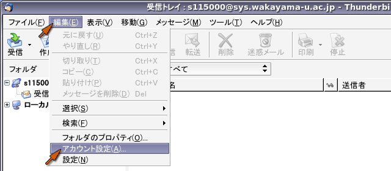
次に左側の枠の中から，「サーバ設定」を選び，右側の「サーバ設定」の枠の中にある「詳細」をクリックしてください．
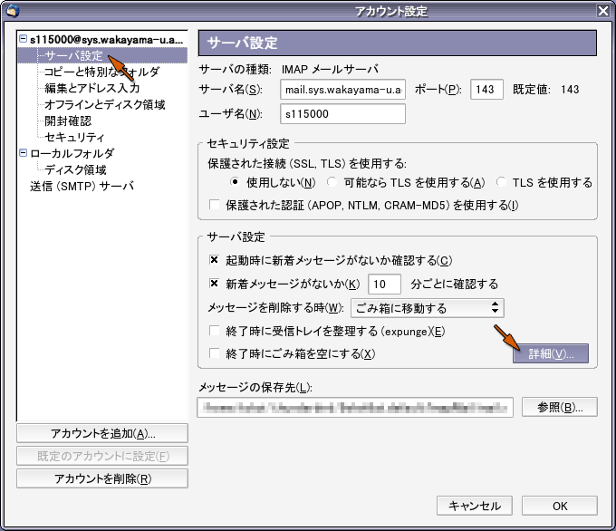
「アカウントの詳細設定」にある「購読しているフォルダのみ表示する」に付いているチェックマークを消してください．その後「OK」をクリックしてください．
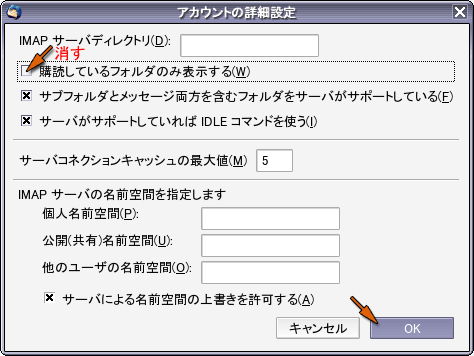
設定が終わったら「アカウント設定」のウィンドウの「OK」をクリックして，ウィンドウを閉じてください．その後 Thunderbird を一旦終了してください．
ここのシステム（Linux 側）で使用できるメールを読み書きするためのソフトウェア（メールクライアント，メール・ユーザ・エージェント，メールソフト）には，以下のものがあります．
| メールの読み書きに使うソフトウェア | |
|---|---|
| mail/Mail | もっとも基本的なもの，コマンドで使用（演習室では使用不可） |
| Thunderbird | 高機能なメールソフト，ウィンドウで使用 |
| MH | 複数のコマンドで構成された高機能なもの |
| RMAIL | emacs に組み込まれたもの |
| mh-e | MH を emacs の中から使用するためのユーザインタフェース |
| mew | MH と互換性があり emacs の中で使えるもの |
| Wanderlust | mew と互換性があり IMAP にちゃんと対応しているもの |
| sylpheed | X Window System (GTK) に対応したもの |
このうち sylpheed は，日本人の手によって開発されているもので，Windows の Outlook Express に似た雰囲気を持っています．Windows 版もあります．また Wanderlust や Mew は，次回以降ずっと使用することになるテキストエディタの emacs の“中”で使用できるものです．
ワープロや表計算などの事務的な情報処理に使用されるソフトウェアのパッケージのことを，オフィススイートとかオフィスソフトなどと呼びます．Windows などでは Microsoft Office や一太郎などのジャストシステムのソフトウェアが有名ですが，これらには Linux 用の物が用意されていません．Linux 上で使用できるオフィススイートには， オープンソースで開発されている KOffice や Gnome Office などがありますが，ここではこれらと同様にオープンソースで開発されている OpenOffice.org を取り上げます（StarSuite は OpenOffice.org の商用版です）．
OpenOffice.org は OpenOffice.org から無償で入手することができます．これには Linux 版のほかに Windows 版や Mac OS X 版もあります．いずれも Microsoft Office との互換性を持っています．
まず，画面左上の「アプリケーション」から，「オフィス」→「OpenOffice.org 2.0 Writer」の順に選んでください．
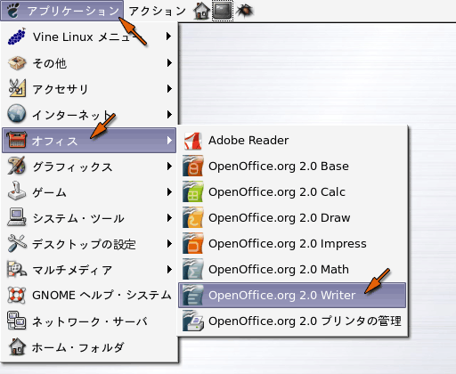
最初に OpenOffice.org を起動したときは，「OpenOffice.org 2.0 へようこそ」というウィンドウが現れます．「次へ」をクリックしてください．
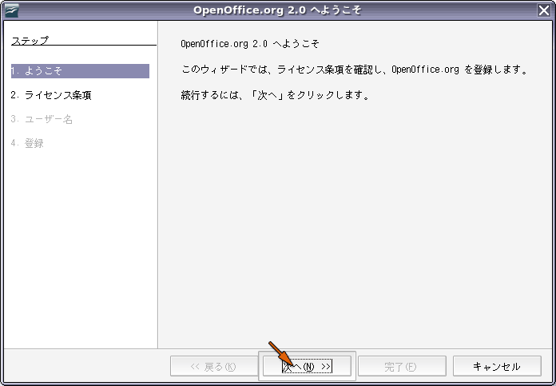
「ライセンス条項」が表示されます．「下にスクロール」をクリックしてください．
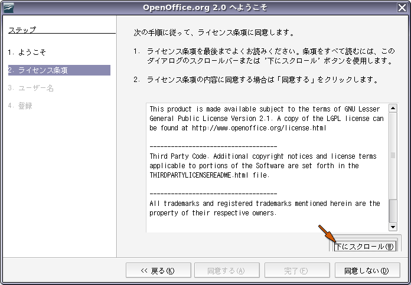
すると，「同意する」のボタンが有効になりますから，そこをクリックしてください．
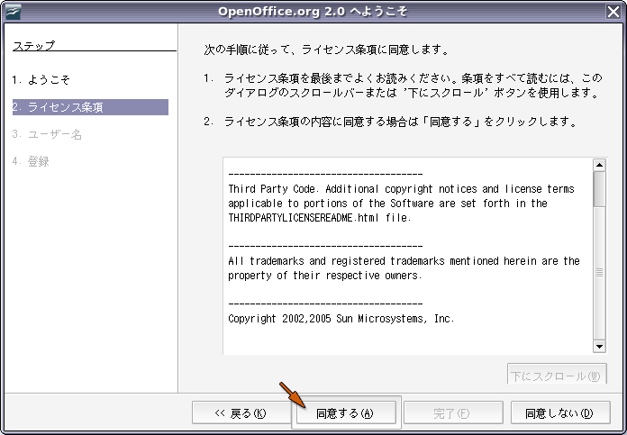
「ユーザー名」には特に何も設定する必要はありません．また，この内容は後に設定できます．「次へ」をクリックしてください．
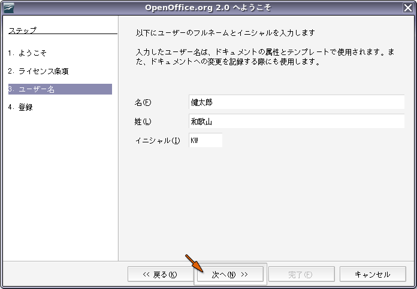
「OpenOffice.org の登録」では，「登録しない」を選んでから「完了」をクリックしてください．
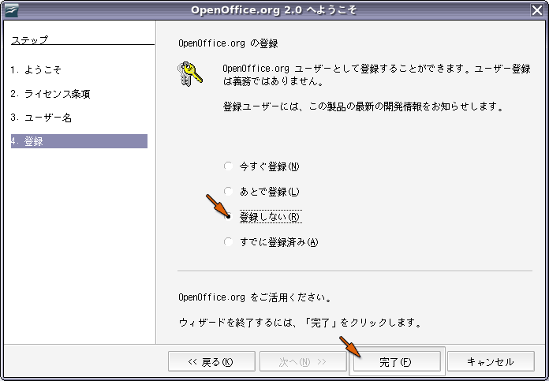
"Writer" の画面は，次のようなものです．
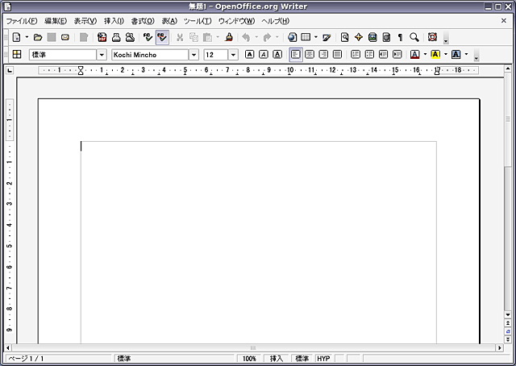
このウィンドウの左側にある四角いボタンをクリックすると，「スタイルと書式」と書かれた小さなウィンドウが開かれます．このウィンドウは，このボタンをクリックするか [F11] キーをタイプすれば，開いたり閉じたりできます．
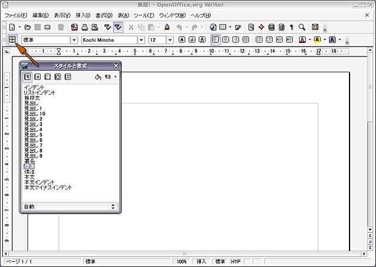
それでは，ここでレポートを書く場合について考えてみます．レポートの最初には題名と著者の名前を書きます．「段落スタイル」の一番下の欄（「自動」と表示されているところ）をクリックして，ポップアップメニューから「章のスタイル」を選んでください．
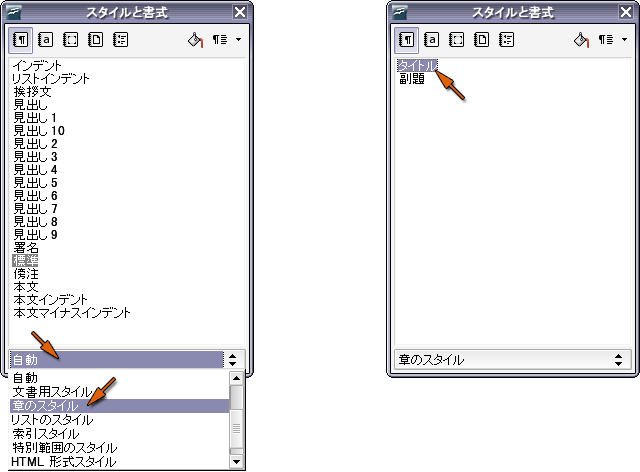
すると「タイトル」と「副題」という２つのスタイルが表示されるので，「タイトル」をダブルクリックしてください．文書のウィンドウのカーソル位置が用紙の中央に移動します．また，そこで文字をタイプすると，文字の大きさや自体がタイトル用のものに切り替わっていることがわかります．
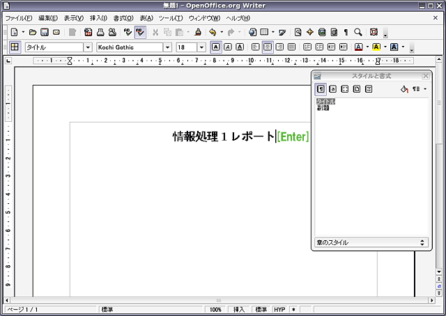
タイトルをタイプした後 [Enter] をタイプすれば改行します．このとき次の行のスタイルは，自動的に「副題」に切り替わります．
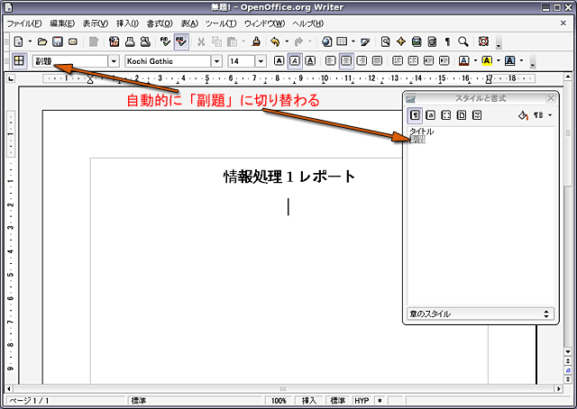
そのまま学籍番号と名前をタイプして，改行（[Enter] をタイプ）します．すると今度はカーソルが文書の左端に移動します．ここで再び「スタイルと書式」の一番下の欄をクリックして，今度は「自動」を選んでください．スタイルが「本文」に切り替わっているはずです．
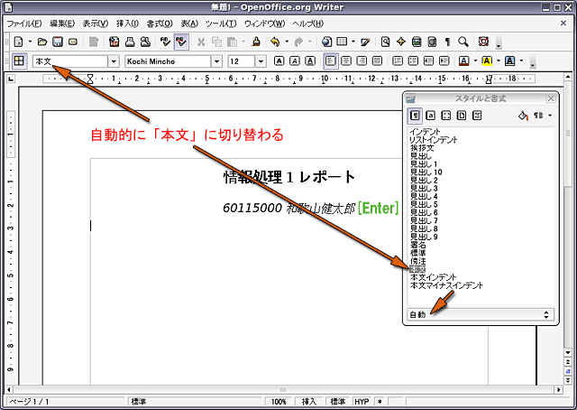
ここで，「スタイルと書式」の中の「見出し１」をダブルクリックして，見出しを書いてみます．
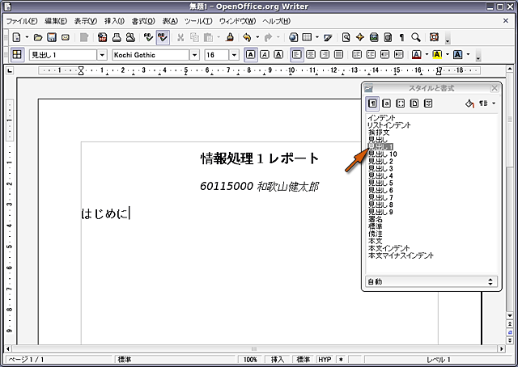
改行すると，スタイルは再び「本文」に戻ります．
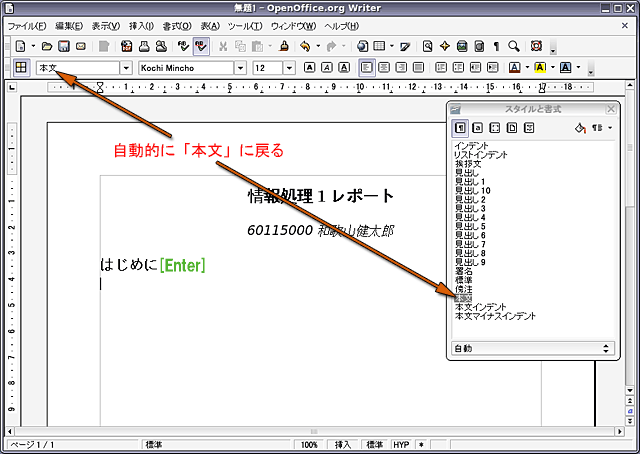
本文を書いてみます．「本文」のスタイルでは，改行すると段落の間に少し間隔が空きます．
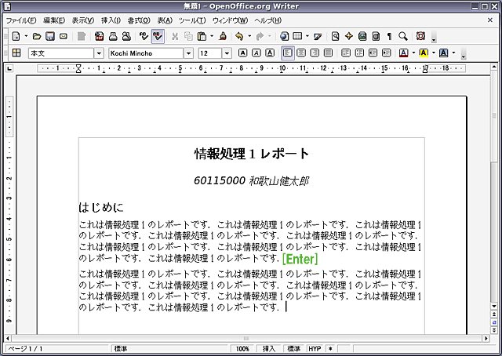
ここで，「スタイルと書式」の中の「本文」を，マウスの右ボタンでクリックし，現れたポップアップメニューから「変更」を選んでください．
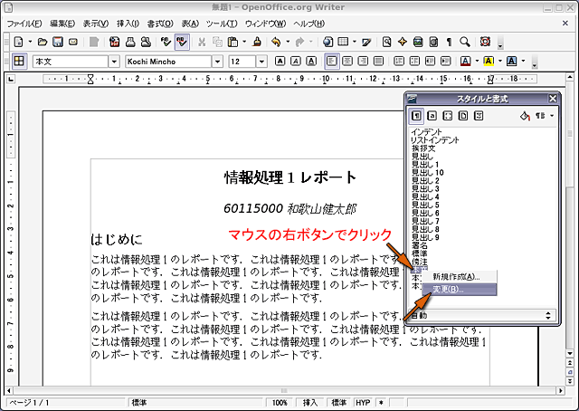
本文の体裁を，日本語の文章らしく最初の行を字下げするようにします．「インデントと間隔」のタブを選んで，「最初の行」の下にあるチェックボックスにチェックを入れてください（「最初の行の右側の欄に，字下げの長さを指定しても構いません）．また，行間も１．５行にしてみましょう．
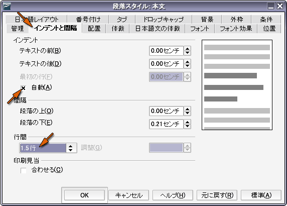
次に「配置」のタブを選び，「オプション」の中から「両端揃え」を選んでください．
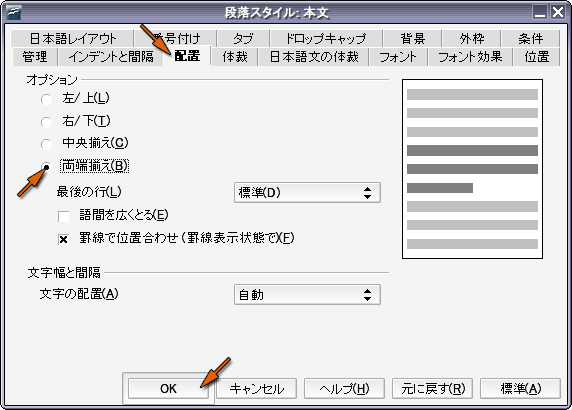
最後に「OK」をクリックすると，本文の体裁が全部変更されているはずです．
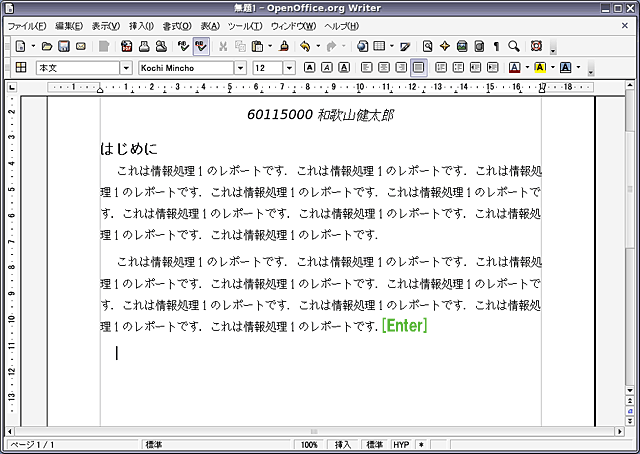
そうしたら新しい見出しを追加します．本文の最後の行で [Enter] をタイプして改行した後，メニューバーの左側にあるプルダウンメニューの▼マークをクリックして，メニューから「見出し１」のスタイルを選んでください．
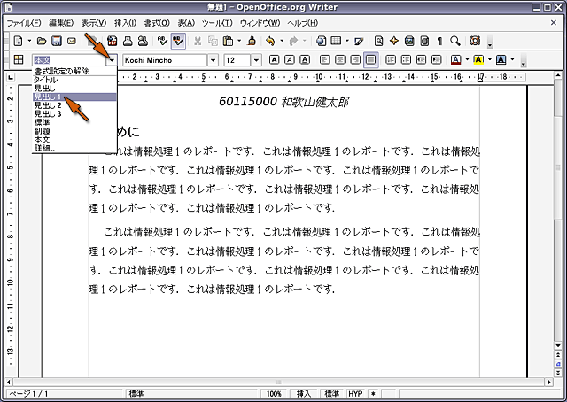
次の見出しを書いてください．そのあと，その見出しのところにカーソルを戻して置いてください．
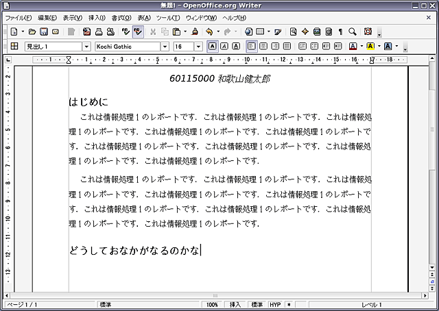
再び「スタイルと書式」ウィンドウを開いて「見出し１」が選択されていることを確認して，そこをマウスの右ボタンでクリックして「変更」を選んでください．
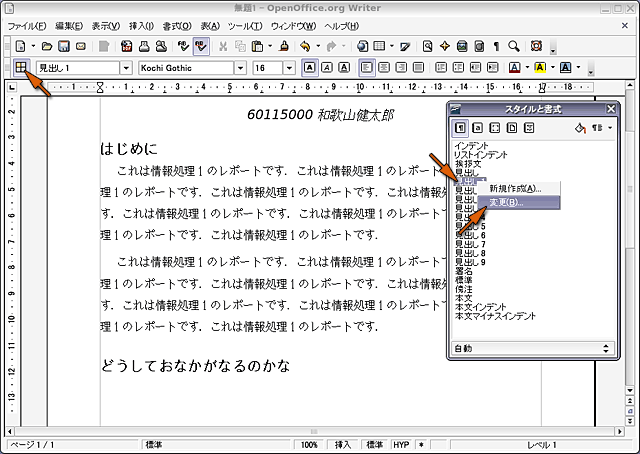
「番号付け」のタブを選んで，「番号付けスタイル」に「番号付け１」を指定してください．そのあと，「OK」をクリックしてください．
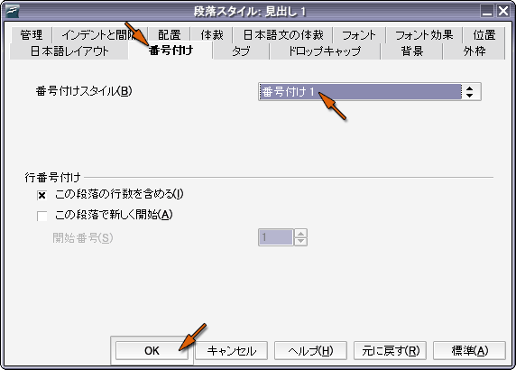
すると，見出しに番号が振られます．
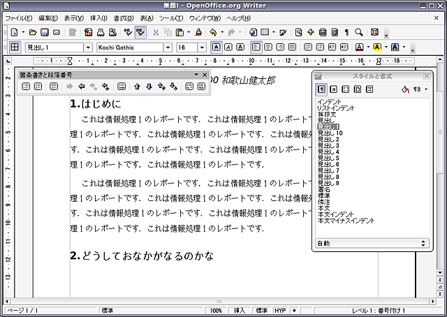
それでは，ここで Writer を終了します．「ファイル」メニューから「終了」を選ぶか，「閉じる」ボタンをクリックしてください．
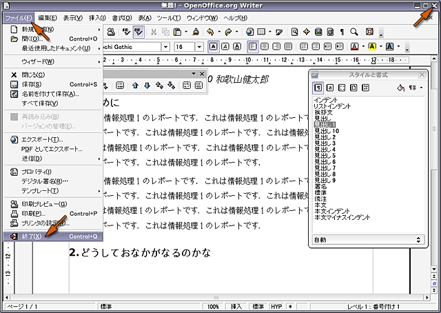
すると，作成した文章を保存するかどうか利いてきます．この文章を保存する必要は無いので，ここでは「破棄」をクリックしてください．
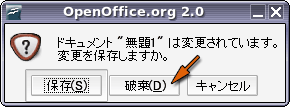
OpenOffice.org には，他にも様々な機能があります．詳しいことはウィンドウの上部にある「ヘルプ」を参照してください．
スタイルシートこのように，文書のスタイル（書式）に名前を付けて管理するものをスタイルシートと呼びます．スタイルシートは最近のワープロソフトの重要な機能であるほか，この考え方は Web ページのレイアウトにも導入されています（第６回）．スタイルの制御はスタイルシートを使用しなくても可能です．しかし，論文など長文の文書を作成する場合に局所的なスタイル指定を行ってしまうと，文書のレイアウトに統一感を持たせてスタイルを変更することが困難になります．
なお，この講義のほか，後に続く情報処理IIや情報処理IIIなどでは，このようなワープロソフトはまったく使用しません（だったら説明するなって？）．その代わり，文書の作成には次回で解説する emacs を用います．この講義で扱う文書はプログラムのソースファイルや Web ページの HTML ファイルが中心になりますが，レポートや論文も第８回で解説する LaTeX を用いて作成することができます（３年次に配属される研究室によっては，卒業論文を LaTeX で作成することを義務付けているところもあります）．
Impress は Microsoft の PowerPoint に相当する，プレゼンテーション用のソフトウェアです．作成したスライドは Impress 上で再生できるほか，Web ページ，PDF (Portable Document Format) ファイル，それに Macromedia Flash 形式でも出力できます．「アプリケーション」から，「オフィス」→「OpenOffice.org 2.0 Impress」の順に選んでください．
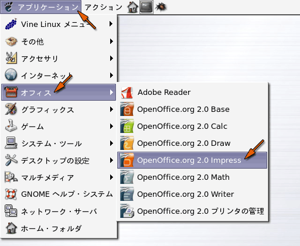
Impress の場合は，始めに「プレゼンテーションウィザード」が起動します．あらかじめ用意されたスライドのデザインを使ってスライドを作るなら「テンプレートから」を選択しますが，ここでは自分でデザインすることにして，「白紙のプレゼンテーション」を選んで「次へ」をクリックしてください．
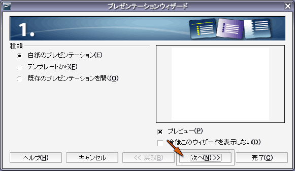
プレゼンテーション背景は，後で自分で作成するので，このまま「次へ」をクリックしてください．
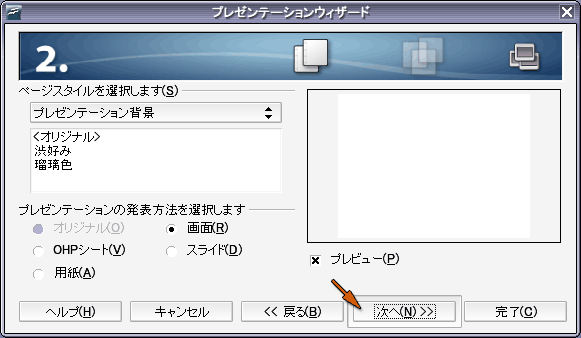
画面の切り替え効果や，切り替えの速度を選んで，最後に「完了」をクリックしてください．
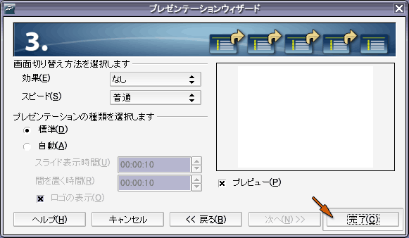
最初になにもレイアウトされていない白いページの編集画面が現れます．
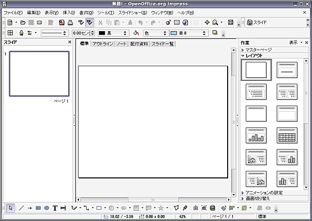
真っ白いページというのもなんなので，背景を変えてみることにします．すぺてのページで背景を共通にするために，「マスター」の背景を変更します．「表示」メニューから「マスター」→「スライドマスター」の順に選んでください．
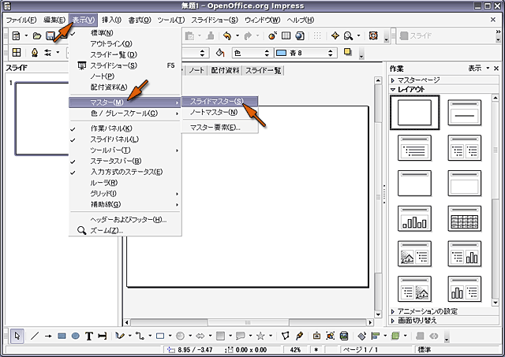
「マスター」はすべてのスライドの基本的なレイアウトとして使用されます．もちろん，スライドごとにレイアウトを変更することもできますが，マスターのレイアウトにあわせておけば，全体として統一感のあるスライドになります．
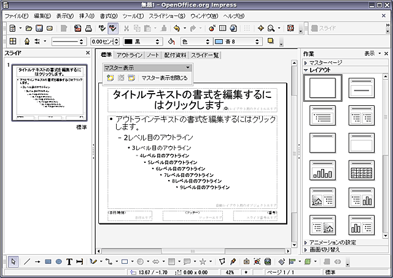
Writer と同様に「スタイルと書式」ウィンドウを呼び出し，「背景」のスタイルをマウスの右ボタンでクリックして，「変更」を選んでください．
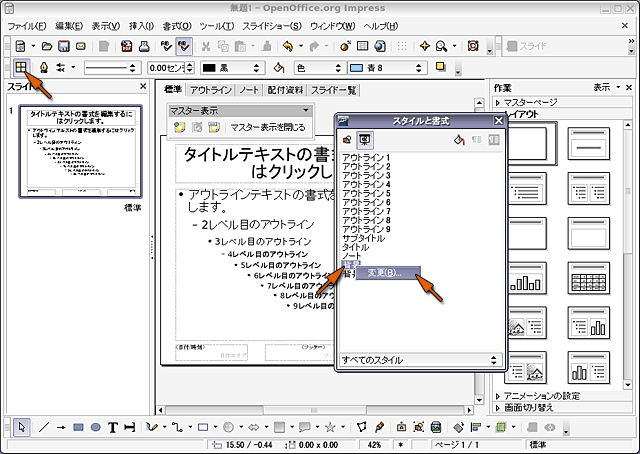
「表面」のタブの「塗りつぶし」から「ビットマップ」を選びます．
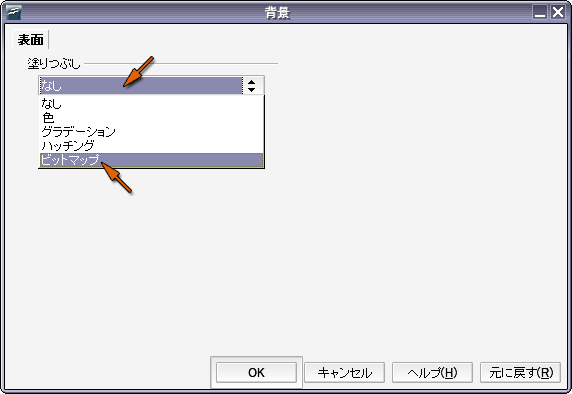
好きな画像を選んだ後，「OK」をクリックしてください．
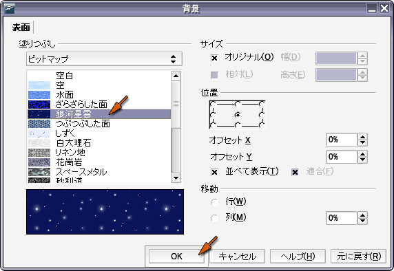
選んだ画像が背景に設定されます．
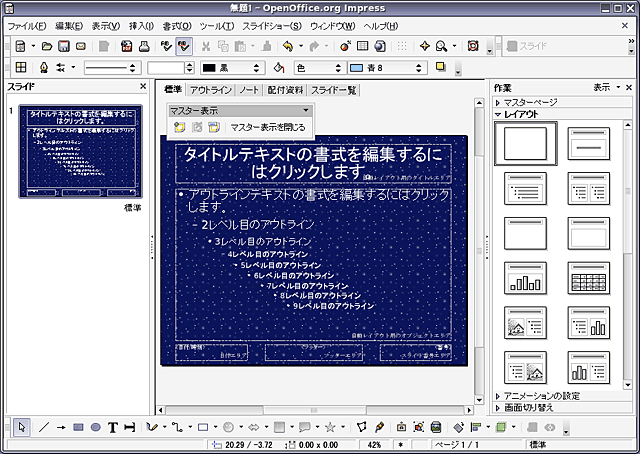
ウィンドウの下端には，文字や図形などを描くためのボタンが並んでいます．このいずれかを選び，ウィンドウの上部のメニューでその色や線の太さなどの属性を設定します．とりあえず，四角形を描いてみます．
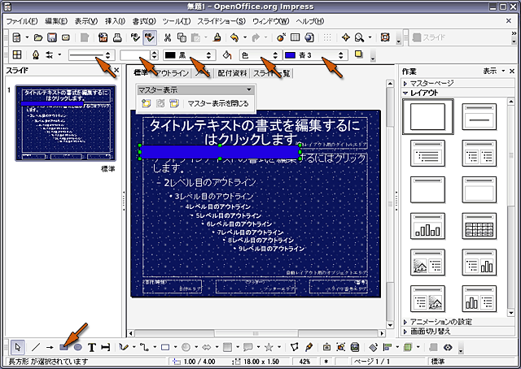
これらのボタンのうち，右側に▼があるものは，その▼をクリックすると，さらに選択肢が現れます．画面の右下にある四角形のボタンは，図形の重なりの順序を変更するときに使います．これを使って描いた四角形を最背面に移します．
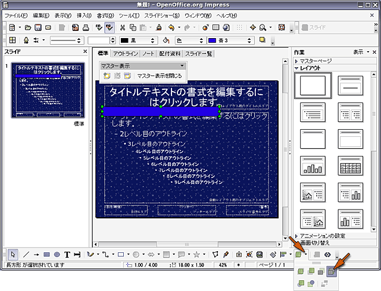
描いた四角形が文字の背後に移動します．
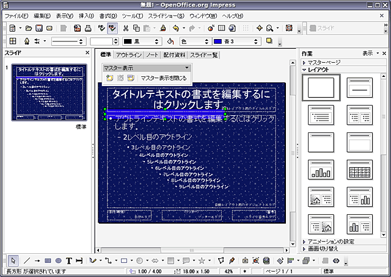
文字の字体（書体）などを変更するときは，「Ｔ」の形のボタンを選びます（文字枠をクリックすれば自動的に選択されます）．変更したい文字（枠）をマウスで選択してから，字体や文字サイズなどを選んでください．なお，「タイトルテキストの書式を編集するにはクリックします。」の文字は字体を表示するためのサンプルですので，文字そのものを変更しても意味はありません．
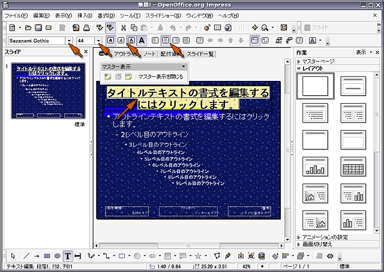
背景のレイアウトができたら，通常のページの編集に戻ります．「マスター表示を閉じる」をクリックしてください．
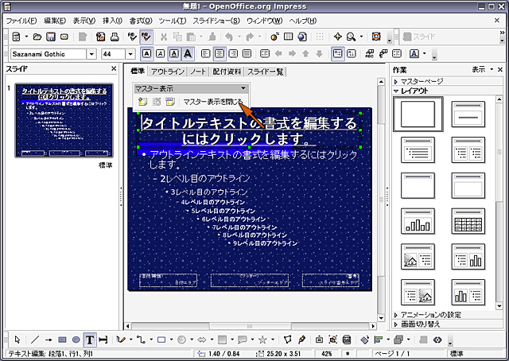
通常のページの編集に戻ります．次にスライドのタイトルページを作りますので，「レイアウト」からタイトルページのレイアウトを選んでください．
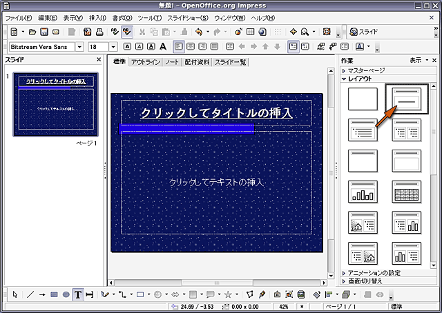
通常のページにあるタイトルの枠とテキストの枠のそれぞれをクリックして，文字をタイプします．タイプできたら，ウィンドウの右上の「スライド」のボタンをクリックして，次のスライドを作成します．
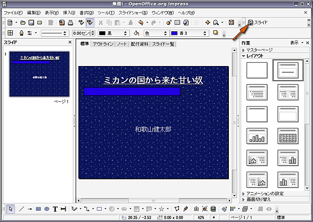
新しいページのレイアウトを選びます．一番よく使われるタイトルとアウトライン（箇条書き）のレイアウトを選択します．
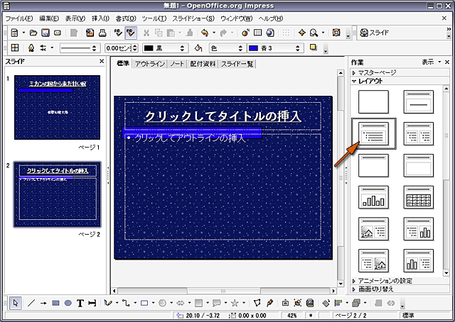
先ほどと同様に，タイトルとアウトラインの枠をそれぞれクリックして，文字を入力します．アウトラインでは，[Tab] (タブ)キーを使って「レベル」を制御します．[Tab] をタイプすればレベルが下がり，[Shift] を押しながら [Tab] をタイプすればレベルが上がります．
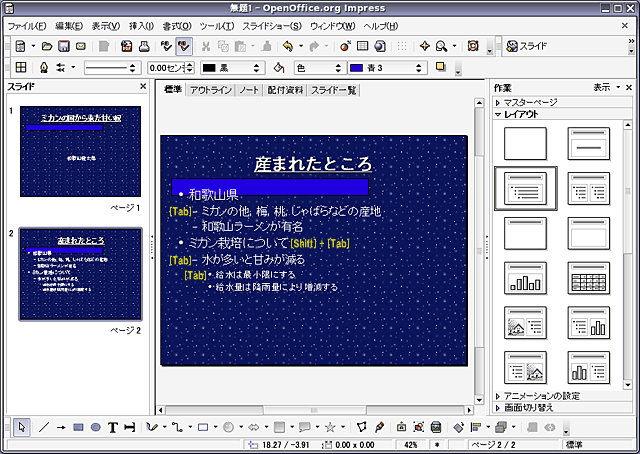
作成した文書やスライドを保存するには，「ファイル」メニューから「保存する」を選ぶか，フロッピーディスクのアイコンをクリックしてください．「名前をつけて保存」というウィンドウが現れたら，保存する文書やスライドに付けるファイル名を指定してください．このとき「ファイル名に拡張子を付ける」にチェックが入っていることを確認してください．
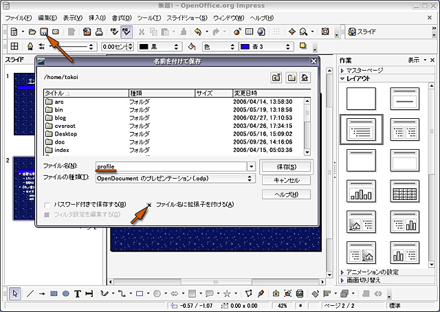
既存のプレゼンテーションを開くなお，保存した Impress のスライドは，次回 Impress を起動したときに「プレゼンテーションウィザード」で「既存のプレゼンテーションを開く」を選べば，もう一度開くことができます．
OpenOffice.org で作成した文書やスライドは，他のアプリケーションで使用できる形式でエクスポートできます．「ファイル」メニューから「エクスポート」を選んでください．
エクスポートする形式を選びます．ここでは Macromedia Flash 形式で保存するので，"Macromedia Flash (SWF) (.swf)" を選んでください．Impress で作ったスライドを Macromedia Flash 形式で出力すると，こういうものが得られます．また，Writer で作った文書を PDF (Portable Document Format) 形式で出力すると，こんなものが得られます．
それでは Impress を終了します．「ファイル」メニューから「終了」を選ぶか，「閉じる」ボタンをクリックしてください．
なお，profile.swf は後の講義で使用しますので，削除せずに保存しておいてください．